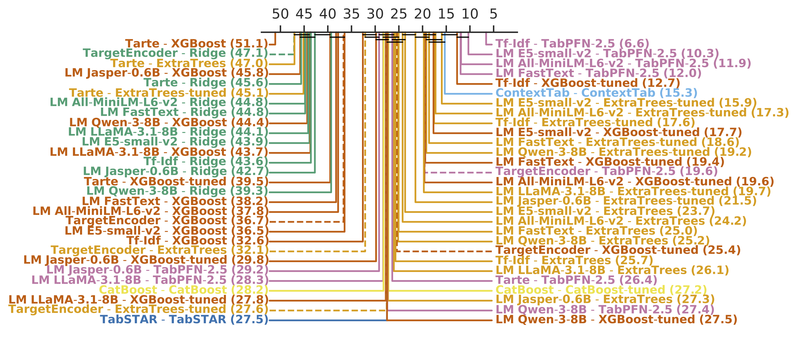
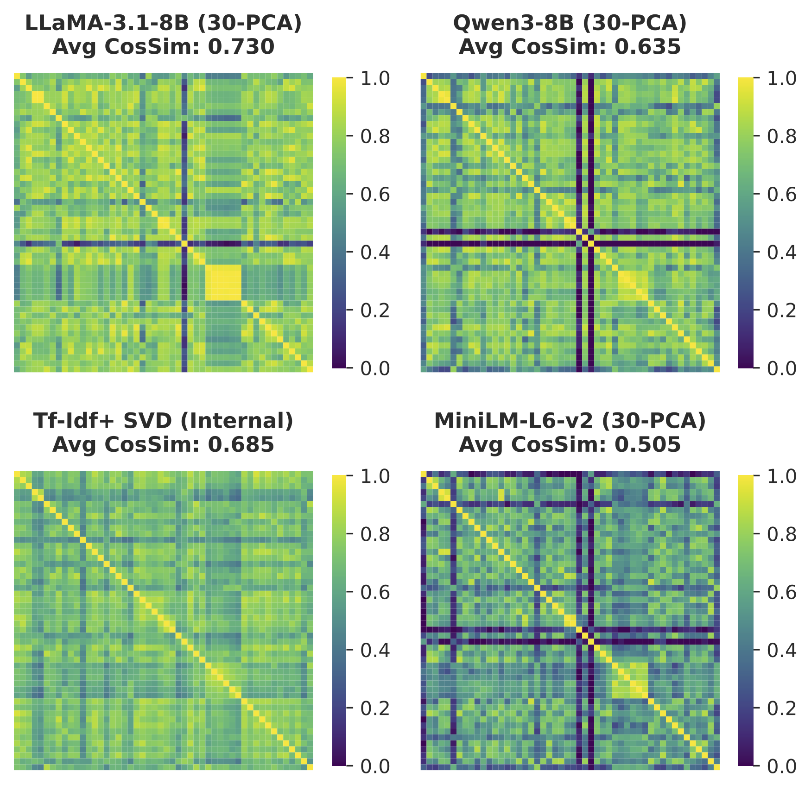
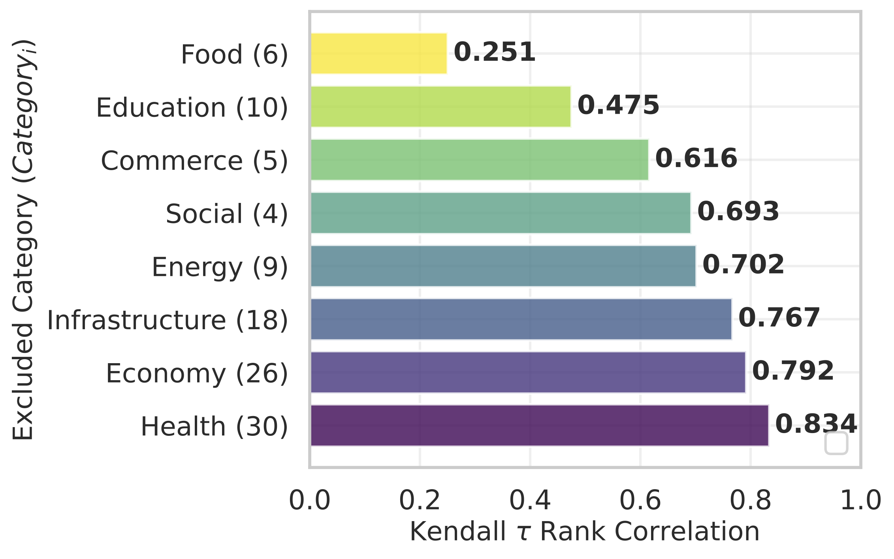

TL;DR
- STRABLE is a benchmark of 108 real-world tables with strings, covering 33 sources across 8 application domains (Economy, Health, Infrastructure, Energy, Education, Commerce, Food, Social).
- Strings carry signal that tabular learners cannot afford to ignore — every learner improves once string columns are added on top of numerical ones.
- Modular pipelines (encoder → learner) outperform today's end-to-end string-tabular architectures (TabSTAR, ConTextTab, Mambular).
- Lightweight encoders + advanced tabular learners (Tf-Idf + TabPFN-2.5 / TabICLv2) dominate the Pareto frontier of performance vs. runtime.
- Large LLM encoders are competitive only with the right post-processing — decoder-only embeddings (LLaMA-3.1-8B, Qwen-3-8B, OPT-6.7B) need standard scaling or Matryoshka-style direct slicing rather than default PCA.
- String length is the dominant ranking disruptor: large LLMs only enter the top-10 on free-text-dominant tables (~8% of STRABLE columns).
- STRABLE's rankings approach the oracle (τ ≈ 0.95 at N = 108) and are stable across domains and data-preparation choices.
Part 1
The STRABLE Dataset
- 108 supervised learning problems — 13 binary classification, 19 multi-class classification, 76 regression tasks.
- 33 sources, 8 application domains — from large institutional repositories (FDA, World Bank, HRSA, FCC) to community-driven platforms (Kaggle, Yelp, Mercari).
- At least 2 string columns and ≥ 500 rows per table; large tables sub-sampled to 75,000 rows so foundation learners (TabPFN-2.5, TabICLv2) remain tractable.
- Minimal preprocessing — we keep raw strings instead of flattening them into integer codes, so future architectures can process them however they want.
- String taxonomy — every string column is profiled into one of five types: Categoricals 49%, Names 23%, Structured Codes 17%, Free Text 8%, Datetimes 2%, Identifiers 0.5%.
Tables in the wild are not OpenML-like

STRABLE (solid) vs. OpenML (dashed). Compared to a generic tabular repository, STRABLE tables have 5× more rows, higher string-column cardinality (median 1.2K), and shorter, more repetitive strings (median 17 characters). Half of the string columns are modalities that string-excluding and string-flattening benchmarks typically destroy.
Part 2
Analysis & Main Take-aways
We benchmark 445 pipelines spanning modular (encoder × learner) and end-to-end architectures, from Tf-Idf to LLMs (Qwen-3-8B, LLaMA-3.1-8B, Jasper-0.6B), and from Ridge to TabPFN-2.5 / TabICLv2 / TabSTAR / ConTextTab.
1. Strings carry signal — every learner benefits from them

For every learner, integrating string columns on top of numerical ones yields a tangible performance improvement (averaged across encoders for modular pipelines, across datasets for end-to-end ones). Numeric and string features are complementary.
2. Modular pipelines beat end-to-end string-tabular architectures

Critical-difference diagram (lower rank = better) across the 108 datasets. Pipelines connected by horizontal bars are not statistically distinguishable. Tf-Idf + TabPFN-2.5 and LLM + TabPFN-2.5 sit at the top; end-to-end string-tabular models — TabSTAR, ConTextTab, Mambular — fall behind.
3. Lightweight encoders + advanced learners dominate the Pareto frontier

Once runtime is taken into account, Tf-Idf + TabPFN-2.5 / TabICLv2 hits the sweet spot. Encoders explain most of the runtime: for a given encoder, performance varies a lot with the learner while runtime varies little. Simple learners benefit more from heavy encoders (Ridge improves with LLMs); advanced learners do not (TabPFN-2.5 + Tf-Idf is hard to beat). Driving this: ~90% of STRABLE's string columns are short and repetitive — Tf-Idf captures the signal at a fraction of the cost.
4. Decoder-only LLM embeddings need the right post-processing

Decoder-only LLM embeddings (LLaMA-3.1-8B, Qwen-3-8B, OPT-6.7B) concentrate most of their variance in a few dimensions and cluster into a narrow cone (avg cosine similarity ≈ 0.57 vs. 0.25 for MiniLM-L6-v2). Default 30-PCA understates their performance. Replacing it with standard scaling before PCA or with Matryoshka-style direct slicing of the first 30 dimensions recovers up to +12% over the default baseline. Encoder-only models are largely insensitive to this choice.
5. The benchmark generalizes — rankings approach the oracle

Convergence of STRABLE rankings to the oracle (τ ≈ 0.95 at N = 108).

Rankings are stable across application fields (Leave-One-Domain-Out Kendall-τ).
With 108 datasets, the agreement between STRABLE's ranking and the oracle ranking reaches τ ≈ 0.95 (only ~2.5% disagreeing model pairs). The ranking is also robust to alternative data-preparation choices — feature engineering, target transformation, missing-value imputation, sub-sampling — all yield Kendall-τ ≥ 0.7 vs. the default. Pipeline rankings shift mainly with average words per cell: large LLMs only break into the top-10 on the few free-text-dominant tables.
BibTeX
@article{strable2026,
title = {STRABLE: Benchmarking Tabular Machine Learning with Strings},
author = {{INSERT_AUTHOR_LIST}},
journal = {arXiv preprint},
year = {2026},
url = {{INSERT_ARXIV_LINK}}
}